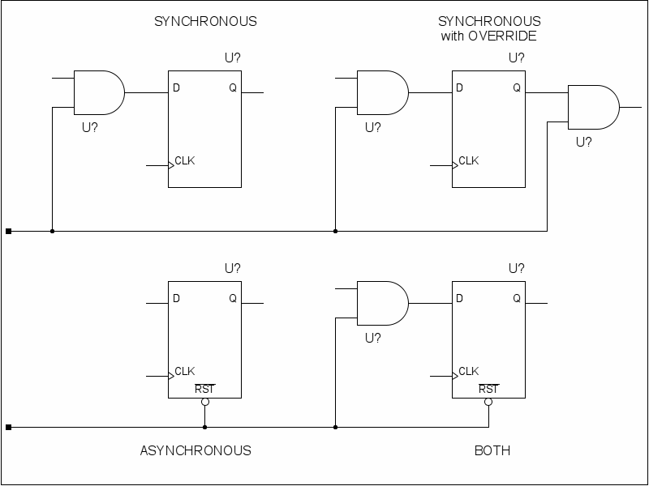
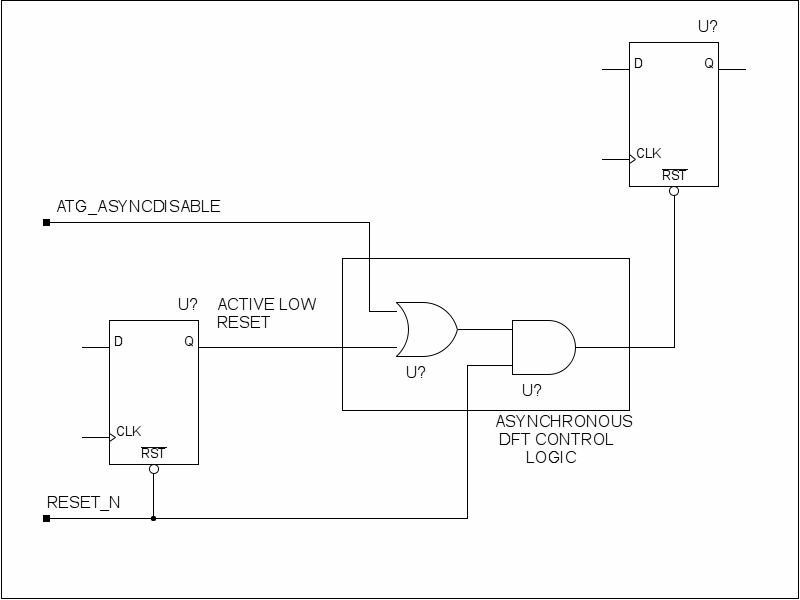

In a world as fast moving as the semiconductor industry it is essential that all designers continuously update their knowledge as the technology changes. It is very easy to become complacent and then suddenly discover that the techniques that have served you for many years no longer work.
This paper was written to explore some of the mistakes that reset system designers have made over the years and why they are no longer true.
Actually you don't. It is a good design practice to ensure that there are no dead end states in your logic and that any state will eventually lead into a valid operating mode. For many years designs were simple and robust enough that they would function even if they were enabled without a reset. Then along came embedded processors and the world became much more complex. I have seen some pretty audacious attempts to create a watchdog to detect and restart a lost system but the best that they can do is to improve the odds that the system will recover. None of them were 100%.
It is possible that you do not need to reset all the storage elements in a design. In many cases the data is reloaded shortly before it is needed and it doesn't care what it was before that time. Some designers will leave certain storage elements off of the power on reset because it has no effect on the operation.
BUT.
There was a mathematician named Fermat who came up with a theorem that eventually became known as Fermat's last theorem. It was a simple little equation that worked in every test case that they threw at it and they threw a lot of test cases at it. But it took over 350 years before someone could prove that it would really work in all cases.
If you allow your designers the option to leave storage
elements off the power on reset system then they will come up with
these wonderful little designs that appear to work and they will work
in any test case that you throw at it. But it will take you FOREVER
to fully verify that it will work in all cases.
You do not need a power on reset system for your logic to work. You need it in order to verify that your logic works. It takes longer to verify a design than it does to create it and not providing a 100% known start up condition will make the verification effort that much harder. All storage elements must be on a reset if only for test and verification purposes. If you have logic that must function during a power up reset then put it on a special reset that is only active in test mode.
That's true, or at least it was back in the 60's. Back then
every component would come out of reset and start "componenting".
The reset system acted like a conductor so that everybody
started on the same beat. Those types of systems are rare today. Most
major chips have one or more microprocessors in side so components
come out of reset only to sit there waiting for the cpu to configure
them and get them started. It doesn't matter what cycle you
come out of reset on as long as you are up and ready before
someone else asks you to do something.
This has led to two
prong approach to reset system design. The majority of the chip
is on a large slow reset distribution tree that doesn't
even try to get everybody reset on the same cycle.
Then you have a second smaller and faster tree that only resets
the cpu and anything else that can initiate activity. The
fast reset is delayed long enough to ensure that the slow reset is
finished before starting the cpu. In modern designs this can be a
significant number of clock cycles. I have seen repairable memories
where you had to hold off starting the cpu for 3000 clocks to ensure
that any repair would be finished before the cpu started.
Absolutely. Most of the time your mission mode requirements will
dictate that the power on reset system works even in the absence of
clock. If it doesn't then the test engineer will require that all
pads must respond to an async reset in case a board is built missing
it's clock. Asynchronous reset design is essential. A power up
monitor will drive the reset input active as the power is
ramping up. You will not have a clock at this time so the reset
system must be able to work without one.
Absolutely. Today's chips are huge. The only way that you can
close timing on a large design is if everyone follows strict
synchronous design rules. The mistake that many of todays
designers make is that they think that because they have to design an
asynchronous reset system that they get an exemption from following
the rules for synchronous design. Sorry guys, it not one or the
other its BOTH. You have to design a asynchronous reset system but
you cannot use any flip flops with an asynchronous reset port.
The
funny thing is that synchronous design methodology is quite capable
of creating an asynchronous reset system and will
actually give you a smaller and faster design that either
of the traditional async only or sync only solutions.
That used to be true. The first thing a vendor does when they get
a net list is to run a full drc that looks for dft issues. If anybody
has any signals crossing between the async reset port on a
flipflop and either a D or a Q port then it flags it as a violation.
So you can either send it back to the customer and wait a week for
them to find it, fix it, and re-synthesizes or you can eco in a test
mux at the flop and have it fixed in 5 minutes. Everyone took the
easy way out.
But then along came Logic equivalence checking
(LEC). The final routed net list will be sent back and compared
with the customers golden net list and all of these ecos will show
up in the report. Now somebody has check out each and every
item in the report before you can release the masks. It now
becomes easier for the customer to find and fix these errors before
synthesis than it is to deal with thousands of lec errors.
Besides
with the newer processes the days when you could eco in a small tweak
on a routed net list and not have it break something are fast
disappearing. You will eco the rtl code and then re-synthesis
and reroute.
I cringe whenever I hear someone say this. If you do a
synchronous reset design then you will find that your gate
simulations will not run. Many of your flipflops will never reset to
a known value. They will get a valid clock and the reset in the block
will be valid but synthesis will have combined the reset logic in
with the mission mode logic and it will be distributed throughout the
logic cone feeding the D input. It also uses the flops current state
in order to compute the next state. It creates a situation
where if the flop has a 0 or 1 in it then the logic will compute the
next state as 0 when reset is active. However if the flop is unknown
as it is at power up then verilog is unable to figure out the correct
next state and it remains at x.
This is a simulation only
issue as flops in real silicon will always resolve to a valid
state.
Tool vendors created the sync_reset pragma so that you
could tell the tool not to combine the reset logic with the mission
mode logic. You place it at the very tip of the logic cone and it
will remain there in gates.
So whats wrong with that?
The
synthesis tool will make a list of all signals that enter the logic
cone along with the relative time it enters before the next clock
edge. If it finds a early arriving signal entering the cone
closer to the tip than a late arriving one then it will
try to remap the logic and swap them so that the late
arrival can move closer to tip. Ideally the
latest signals are moved towards the tip and the early ones are moved
to the rear.
The reset from a properly designed distribution
tree and the feedback signal from the flop that you are working on
will always be two of the earliest signals. They will get pushed up
away from the tip of the cone simply to make room for the mission
critical late signals. This is a good thing, you want this to happen.
The problem is that designers think that they must prove that
the reset system works in gate sims. Verilog is a great tool when
every node is in a known state but it is lousy when dealing with
unknowns. There are times like this when it is possible to resolve a
X into a known value and it can't. There are also times when it
will resolve an X to a known value when it shouldn't. The only way to
use verilog is to start with everything in a known state and stop it
when anything goes X. That means there's a problem and nothing
downstream from that X can be trusted.
You do not prove
your reset system design in gates sims. You prove the design in rtl
sims and use LEC to prove that gates matches the design that works.
Then you use initial statements to force all flops to a known state
at start up and use gates sims to prove that everything else works.
Verilog gates is the wrong tool to use to verify the reset
system.
You never use the sync_reset pragma unless you really
like big slow designs.
Wrong. Adding logic in the critical path will slow down the
design. Adding it into a non-critical path simply reduces slack in
that path. If you put the reset logic at the very tip of the logic
cone then you are adding it into the critical path and the synthesis
tool will move it up the cone until it is in a safe
location.
Adding a synchronous reset system doesn't really add
much logic to the design. The tools will first locate any mission
mode logic that also forces the flop into the reset state and it will
piggyback the reset system with that logic. You don't add gates , you
bump a gate up to add an extra input.
The power on reset is really a slow operation. A typical system could see:
Ramp time for power rails
clock start up time
pll lock time
You are looking at activity that is measured in the milliseconds
on a system clock that is measured in the nanoseconds. Performing a
reset in one clock cycle requires adding logic to every single
flipflop
to provide nanosecond resolution to an event that is
measured in microseconds. A designer should only add reset logic as a
last resort. The preferred method is to use the existing mission mode
logic to perform the reset. If you have a computational block with a
fifty stage deep pipeline then reset should force it's inputs to 0
and open all the gates so that every flipflop will be flushed out in
50 clocks. Better yet would be to have the block feeding your input
force it's output to all 0's during reset.
Every design should
spec a multicycle reset and give the designers the freedom to reset
any way they want as long as it's finished by the end of the reset
pulse.
The first step in any design task is to write a statement that
sums up what the thing you are designing will do. This is
important because everything after this point must be traceable back
to this statement. The statement will tell you
what steps you must follow. Anything that you cannot trace back
to something in the mission statement is not part of the design
The
mission statement for the reset system is:
The mission
of the reset system is to NOT do anything while reset triggers are
inactive and then to force all the nodes in a system or subsystem
into a known good state while a reset trigger is active.
The main reason we have so much trouble with resets is that most designers don't realize that their first duty is to ensure that nothing happens when you aren't doing a reset. They do everything they can to ensure that any reset is quickly and forcefully delivered throughout the entire design and then are surprised when their product fails ESD testing.
We must now make a list of all the events that will cause us to reset all or part of the system. Our list is:
The design has a power monitor chip that provides a low signal when the supply rails have not been above the limit for a long enough period of time
The design has a soft reset block that can reset any sub block if its reset flop is set to 1.
The clocks must run during reset but the divider has a special reset input for simulation and testing
The design has ieee 1149.1 test logic with a active low trst* pin.
The reset signal has a metastable filter to sync it with the clock.
The last is important because some designers will forget that the filtered output is actually it's own separate reset domain.
Any Signal from the PCA into a chip might also contain an ESD glitch. If this appears on the reset signal then it could disrupt the products operation and result in a failure. A low pass filter must be used to block these transitiates
We now look at every storage element in the design and define a safe state for each element of either 1 or 0. Don't cares are not allowed. If you cannot pick a value then one will be assigned for you. This task is best performed after the system and board designers have defined the known good state for the PCA. They will define the state for all of the pads, the ic design team must define the states for all internal nodes.
Once we have a list of all storage element we list any and all
triggers that will force them into a safe mode.
A typical list
would list all the flipflops in timer module u12.r567 would be reset
by:
an active high on soft reset bit #23
an active low on the power monitor input
an active low on the simulation/test reset
an active low on the output of the metastable filter
The jtag reset is not included because it doesn't reset the
timer. Once this step is complete it will provide a map for the
reset distribution tree that you will need. The best way to
distribute the reset over a large design is to use what is called a
"synchronous reset tree".
At this point it is easy to see if we need a synchronous or
asynchronous reset system. If your trigger is asynchronous then you
must design a asynchronous reset system. If the trigger can occur
without a clock then you must be able to reset the system without a
clock.
If the trigger is synchronous then you may design a
synchronous reset system or you may also choose to design a
asynchronous one. The async one will enter reset one
cycle before the sync one but they will both exit on at
the same time.
We now need to select a reset "Style" for each flip/flop
from the four possible reset styles.
Synchronous
Synchronous with output override
Asynchronous
Both Synchronous and Asynchronous
Multicycle
If the reset system is synchronous then you may choose any of
the four styles. If it is asynchronous then you cannot use the
synchronous style.

All paths from the Q output of a flip/flop to the asynchronous
reset/preset port of a flip/flop must be disabled during scan
testing. The use of a test mux to do this is not recommended because
anytime you use a test mux you are not testing the circuit as it is
used in mission mode. There will always be at least one point of
failure inside the test mux where scan tests will pass but the IC
will not function.
The recommended method is to gate off the
synchronous path with a atg test signal and then recombine it with an
asynchronous reset so that the async reset it self is still testable.
The lib module cde_asyncdisable is available for this purpose. DO NOT
CREATE YOUR OWN TEST LOGIC. Checking the rtl code to ensure
that all asynchronous resets are testable requires a fairly
sophisticated and expensive tool. Checking the rtl to ensure that all
asynchronous resets are properly connected to a cde_asyncdisable
module takes a simple perl script.

Asynchronous resets connect to the asynchronouse reset/preset ports of a flip/flop. Synchronous resets connect through the logic cone to the D flip/flop port. They are the logicaly the same signal in mission mode but must be sperate during scan testing. It is very easy to make a mistake in rtl coding. The recomendation is the use active low signals for all asynchronous resets and active high signals for all synchronous ones.